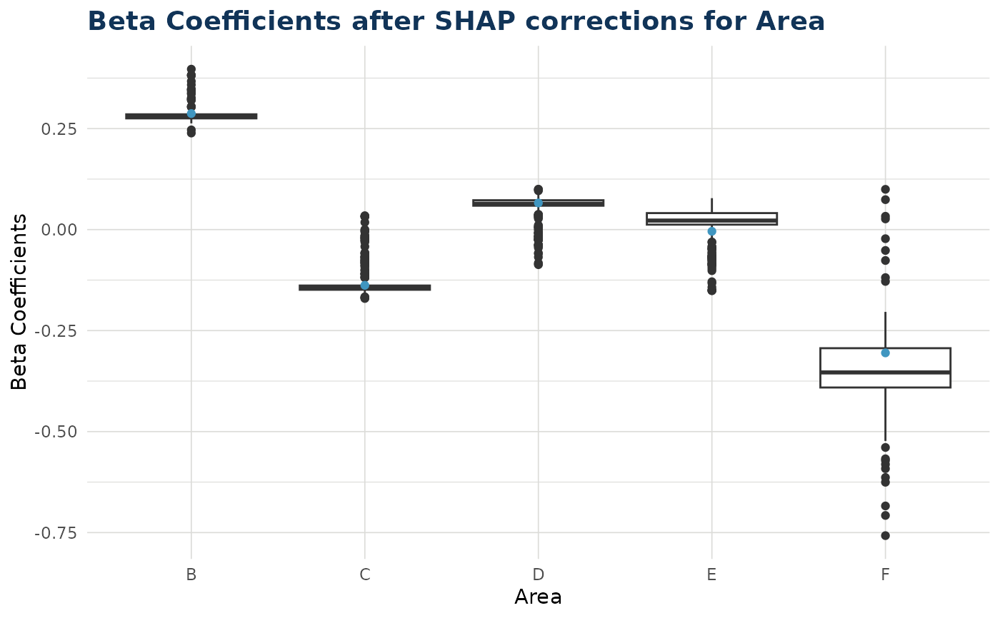
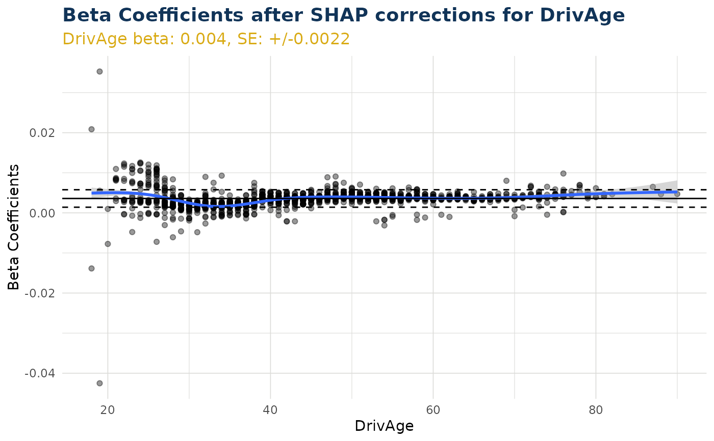

Scatter Plot of Beta Corrections for a Variable
Source:R/create_beta_correction_plot_functions.R
beta_corrected_scatter.RdGenerates a scatter plot or boxplot showing SHAP corrections for a specified variable from a fitted model. For numerical variables, creates a scatter plot with optional coloring and marginal densities. For categorical variables, creates a boxplot with model coefficients overlaid.
NOTE This function signature documents the interface of functions created by create_beta_corrected_scatter.
Arguments
- varname
Character. Name of the variable to plot SHAP corrections for. Must be present in the fitted model.
- q
Numeric. Quantile threshold for outlier removal. When 0 (default) the function will not remove any outliers
- color
Character or NULL. Name of variable to use for point coloring. Must be present in the model. Currently not supported for categorical variables.
- marginal
Logical. Whether to add marginal density plots (numerical variables only).
Value
A ggplot2 object. For numerical variables: scatter plot with SHAP corrections, model coefficient line, and confidence bands. For categorical variables: boxplot with coefficient points overlaid.
Details
The function handles both numerical and categorical variables differently:
Numerical: Creates scatter plot of variable values vs. beta + SHAP deviations
Categorical: Creates boxplot of SHAP deviations for each level with coefficient overlay
For numerical variables, horizontal lines show the model coefficient (solid) and confidence intervals (dashed). SHAP corrections represent local deviations from the global model coefficient.
Examples
# This function is created inside explain_iblm() and is output as an item
df_list <- freMTPLmini |> split_into_train_validate_test(seed = 9000)
iblm_model <- train_iblm_xgb(
df_list,
response_var = "ClaimRate",
family = "poisson"
)
explain_objects <- explain_iblm(iblm_model, df_list$test)
# plot can be for a categorical variable (box plot)
explain_objects$beta_corrected_scatter(varname = "Area")

# plot can be for a numerical variable (scatter plot)
explain_objects$beta_corrected_scatter(varname = "DrivAge")
#> `geom_smooth()` using method = 'gam' and formula = 'y ~ s(x, bs = "cs")'

# This function must be created, and cannot be called directly from the package
try(
beta_corrected_scatter(varname = "DrivAge")
)
#> Error in beta_corrected_scatter(varname = "DrivAge") :
#> This function documents the interface only and cannot be called
#> directly. Instead, try one of the following
#> ℹ Use explain_iblm()$beta_corrected_scatter()
#> ℹ Call a function output from create_beta_corrected_scatter()